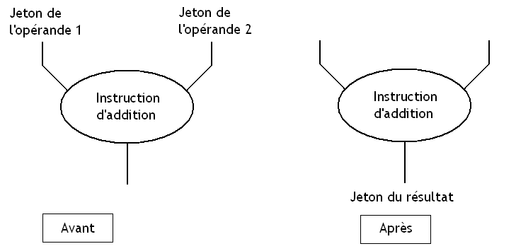

Si vous programmez depuis un certain temps, vous savez sûrement qu'il existe plusieurs paradigmes de programmation : le paradigme procédural, l'impératif, l'objet, le fonctionnel, etc. Chaque langage est plus ou moins rattaché à un (voire plusieurs) de ces paradigmes, et dispose de fonctionnalités plus ou moins diverses et variées. Mais ces langages ont pour but de créer des programmes exécutables par un ordinateur dont le matériel est plus ou moins évolué.
Au départ, les premiers ordinateurs étaient optimisés pour exécuter des langages de programmation impératifs très simples, et leur assembleur disposait de peu de fonctionnalités proches des langages de haut niveau : pas de support des tableaux, sous-programmes (les fameuses fonctions), et les types de haut niveau n'étaient pas supportés (pas de flottants ni de caractères, seul un type était accepté : le word). Au fil du temps, l'assembleur de ces processeurs et leur architecture ont évolué pour supporter les fonctionnalités de haut niveau dans leur assembleur : le nombre de types supportés par le processeur s'est étoffé, des instructions spéciales pour supporter les sous-programmes ont été inventées, et de nombreux modes d'adressage spécialement dédiés aux tableaux et structures ont fait leur apparition. Toutes ces améliorations ont fait que nos processeurs sont particulièrement adaptés à des langages procéduraux de haut niveau comme le C, le Pascal, le BASIC ou le Fortran.
Mais tous les processeurs existants n’ont pas forcément suivi cette logique et ne se sont pas adaptés qu'aux langages procéduraux. Par exemple, quand la programmation orientée objet s'est démocratisée dans les années 1980, des chercheurs ou des fabricants de processeurs ont décidé de créer des processeurs prenant en charge une bonne partie des fonctionnalités des langages de programmation orientés objet directement dans leur matériel. Cela a donné lieu à quelques petites architectures plutôt sympas, dont certaines ont quitté les laboratoires pour finir par être commercialisées.
Mais certains sont carrément allés beaucoup plus loin : il existe de nombreuses architectures spécialement adaptées à l’exécution de langages fonctionnels ou logiques : les architectures dataflow. Ces architectures étaient assez étudiées dans les années 1980, mais sont aujourd’hui tombée en désuétude. Ce tutoriel va parler de ces processeurs (en même temps, vu le titre...), assez différents de ce à quoi l'on peut être habitué.
Pour introduire ces architectures dataflow, nous allons commencer par voir qu'est-ce qui différencie ces architectures des architectures "normales", adaptées aux langages procéduraux. Et pour commencer, je vais commencer par quelques explications (des rappels pour certains) qui vont expliquer dans les grandes lignes comment fonctionne un ordinateur "normal".
Les processeurs normaux
Sur un ordinateur normal, un programme est une suite d'instructions : ces instructions sont des opérations de base qu'un processeur va éxecuter sur des données, qui sont généralement stockées dans l'ordinateur sous la forme d'une suite de bits. Cela ne change pas sur les architectures dataflow. Ces instructions sont stockées dans la mémoire de notre ordinateur comme les données : avec des suites de bits.
Sur un processeur normal, ces instructions sont exécutées dans un ordre bien précis, les unes après les autres. Un programme informatique n'est donc qu'une vulgaire suite d'instructions stockée quelque part dans la mémoire de notre ordinateur. Celles-ci sont placées les unes à la suite des autres dans l'ordre où elles doivent être exécutées. L'ordre en question est un peu arbitraire, et est décidé soit par le programmeur, soit par le compilateur. Ces processeurs sont donc adaptés à des langages dits impératifs, comme le C, le C++, le Java, etc ; vu que dans ces langages, on crée un programme en utilisant certaines instructions de base et en précisant l'ordre d’exécution explicitement.
Par exemple :
Adresse
Instruction
0
Charger le contenu de l'adresse 0F05
1
Charger le contenu de l'adresse 0555
2
Additionner ces deux nombres
3
Charger le contenu de l'adresse 0555
4
Faire en XOR avec le résultat antérieur
...
...
5464
Instruction d'arrêt
Pour savoir où il est est, le processeur contient un petit registre qui stocke la position en mémoire de la prochaine instruction à exécuter. Ce registre s'appelle le Program Counter. Lorsqu'on allume le processeur, celui-ci charge automatiquement la première instruction du programme. Puis, à chaque cycle d'horloge, un petit circuit interne au processeur va calculer l'adresse de la prochaine instruction et va la placer dans le Program Counter de façon à pointer sur l'instruction suivante. Et ainsi de suite, jusqu'à ce que notre programme termine (s'il termine !).
Il existe quand même un moyen de faire varier l'ordre des instruction au cours de l’exécution de notre programme : certaines instructions spéciales, les branchements, peuvent modifier le contenu du Program Counter. Cela permet de créer des structures de contrôle comme des boucles, des tests, des branchements (break, goto, exceptions, etc), des fonctions, etc ; qui sont massivement utilisés, et sans lesquels on ne pourrait pas faire grand chose d’intéressant.
Architecture dataflow
Sur les architectures dataflow, ce Program Counter n'existe pas : ces processeurs s'en passent royalement et sont incapables de calculer la prochaine adresse. Sur ces ordinateurs, une instruction s’exécute dès que ses opérandes (les données qu'elle manipule) sont disponibles. L'ordre des opérations n'est donc pas imposé une fois pour toute de façon rigide, et est déterminé par d'autres mécanismes assez contre-intuitifs.
A quoi ça sert ?
Ces architectures étaient assez en vogue dans les milieux universitaires dans les années 1970 à 1980. A cette époque, les chercheurs en architecture des ordinateurs cherchaient, comme toujours, à rendre nos ordinateurs plus rapides, plus puissants. A l'époque, les chercheurs cherchaient à créer des architectures parallèles, capables de traiter plusieurs données ou plusieurs instructions en même temps. Le but était très clairement la performance, et les chercheurs essayaient de trouver des moyens permettant de paralléliser facilement des programmes informatiques. A ce propos, la recherche dans le domaine du parallélisme est une sorte de serpent de mer qui revient régulièrement : quand les chercheurs en architecture des ordinateurs sont à court d'idées, ils cherchent à paralléliser ce qui ne l'est pas encore (et quand ils n'y arrivent pas ou que cette parallélisation montre ses limites, ils sortent la spéculation). D'ailleurs, cette problématique est revenue au gout du jour ces dernières années avec l’avènement des architectures multicœurs. De nos jours, avec l’avènement des architectures multicœurs, de nombreux programmeurs cherchent à utiliser au mieux la puissance fournie par les processeurs modernes. Pour cela, une des solutions possibles consiste à faire exécuter des instructions indépendantes dans des processeurs ou dans des circuits (unités de calcul) séparés.
Mais comment profiter au mieux de ce parallélisme et faire en sorte que nos programmes puissent éxecuter plusieurs instructions en parallèle ?
Nombreux sont ceux qui pensent que paralléliser un programme est avant tout un problème logiciel. Modifier un logiciel pour que celui-ci soit découpé en plusieurs morceaux indépendants à éxecuter sur des processeurs séparés est en effet un bon moyen pour utiliser plusieurs processeurs ou plusieurs cœurs. La parallélisation est donc dans ce cas du ressort du compilateur ou du programmeur : c'est à eux de modifier le programme pour le paralléliser. Le matériel se charge alors de fournir plusieurs processeurs ou cœurs à utiliser, et éventuellement quelques instructions pour faciliter communication ou la synchronisation entre les différents morceaux de programmes (interruptions inter-processeurs, instructions machines atomiques permettant d'implémenter des Mutex, etc). En clair, on garde une architecture non-parallèle, avec son Program Counter qui exécute des instructions les unes après les autres (et donc, de façon non-parallèle), et on se débrouille pour la rendre parallèle. La conséquence, c'est que les couts de synchronisation et de communication entre les différents morceaux de programmes peut être assez conséquent et peut réduire les performances si on s'y prend assez mal. Sans compter certaines contraintes concernant la hiérarchie mémoire, qui jouent souvent de mauvais tours.
Mais certains chercheurs se sont dits que penser hors du cadre ne faisait pas de mal : ceux-ci ont considérer que paralléliser un programme pouvait être un problème matériel, et que créer des architectures réellement conçue pour éxecuter des instructions en parallèle serait une grande avancée. Si on regarde bien, l'existence même du Program Counter est anti-parallèle par nature : celui-ci impose d’exécuter nos instructions dans un ordre bien précis, sans possibilité d’exécuter des instructions en parallèle (sauf si on utilise des ruses de sioux comme le pipeline, ou l’exécution superscalaire). Créer des architectures spéciales, sans Program Counter serait donc un gros plus qui permettrait non pas de découper des programmes entiers en morceaux qu'on pourrait éxecuter en parallèle, mais permettrait de paralléliser directement des instructions ! Nos chercheurs ont cherché (quoi de plus normal...) un moyen de créer des ordinateurs pouvant se passer de ce Program Counter et qui soient capable naturellement exécuter en parallèle un grand nombre d'instructions facilement, sans trop d'aide venant du logiciel. Les architectures dataflow furent une de ces réponses, qui a été adaptée et remise au gout du jour d'une certaine façon (préparez-vous à une surprise !).
Comme vous l'avez remarqué, les architectures dataflow ne se voient pas imposer d'ordre d’exécution arbitraire et ont pour seul maitre la disponibilité des données à manipuler. Cela signifie une chose assez intéressante : si deux instructions ont leurs opérandes prêtes, rien n’empêche de les éxecuter simultanément. Les architectures dataflow sont conçues pour profiter de cette particularités et possèdent souvent plusieurs processeurs ou unités de calculs indépendantes : cela permet d’exécuter plusieurs instructions en parallèle (simultanément). Cela allait même beaucoup plus loin : ces architectures étaient conçus pour être utilisés dans des réseaux reliant plusieurs centaines d'exemplaires via un réseau local. Généralement, les architectures dataflow reliaient entre eux des centaines de processeurs, chacun accompagné de sa propre mémoire, via un réseau local.
Mais comment remplacer le Program Counter ?
Sur ces architectures, les instructions ne sont pas placées les unes à la suite des autres dans la mémoire vu qu'elles ne sont pas rangées dans un ordre bien précis. Les architectures dataflow utilisent une autre méthode pour indiquer au processeur quelle sera la prochaine instruction à exécuter : on devra indiquer au processeur quelle est la prochaine instruction à éxecuter à chaque fois qu'on exécute une instruction. Pour cela, chaque suite de bits représentant une instruction machine contient l'adresse mémoire de la prochaine instruction à exécuter.
Comme dit plus haut, nos instructions fonctionnent sur un principe simple : une instruction s’exécute dès que ses opérandes (les données qu'elle manipule) sont disponibles. Mine de rien, cela cache un concept assez important pour ces architectures : celui de dépendance de donnée entre instructions. Le terme pourrait sembler bien barbare, et je dois avouer que quelques explications vont vous faire le plus grand bien !
Qu'est-ce qu'une dépendance de données ?
Une...dépendance ? Nos instructions sont droguées ?
Mais non ! :lol:
Deux instructions ont une dépendance de donnée quand elles doivent lire ou écrire au même endroit dans la mémoire de notre ordinateur : même registre ou à la même adresse mémoire. Dans ce cas, suivant l'ordre dans lequel on effectue nos instruction, le résultat peut changer. Ainsi, un programme devra absolument suivre l'ordre d'accès à la mémoire imposé par le programmeur (ou le compilateur), histoire de donner le bon résultat.
Différents cas se présentent, suivant que les deux instructions écrivent ou lisent cette donnée. La localisation de la donnée n'a pas d'importance : celle-ci peut être en RAM ou dans un registre, on s'en moque ! On se retrouve alors avec quatre possibilités :
Dépendance de données
Effets
Read after Read
Nos deux instructions doivent lire la même donnée, mais pas en même temps ! Dans ce cas, on peut mettre les deux instructions dans n'importe quel ordre, cela ne pose aucun problème.
Read after write
La première instruction va écrire son résultat dans un registre ou dans la RAM, et un peu plus tard, la seconde va lire ce résultat et effectuer une opération dessus. La seconde instruction va donc manipuler le résultat de la première.
Write after Read
la première instruction va lire un registre ou le contenu d'une adresse en RAM, et la seconde va écrire son résultat au même endroit un peu plus tard. Dans ce cas, on doit aussi exécuter la première instruction avant la seconde.
Write after Write
Nos deux instructions effectuent des écritures au même endroit : registre ou adresse mémoire. Dans ce cas aussi, on doit conserver l'ordre des instructions et ne pas réordonnancer, pour les mêmes raisons que les deux dépendances précédentes.
Comme vous le voyez, ces dépendances vont imposer un certain ordre d’exécution pour nos instructions. Un programme conçu pour les architectures dataflow devra absolument suivre l'ordre imposé par les dépendances de données. Cet ordre est un ordre qui est imposé : exécutez les instructions dans un ordre différent, et votre programme donnera un résultat différent. Prenons le cas d'une dépendance WAR : on a une lecture suivie par une écriture. Si on décide de changer l'ordre des deux accès mémoires et que l'on effectue l'écriture avant la lecture, la lecture ne renverra pas la valeur présente avant l'écriture, mais celle qui a été écrite. Il est donc strictement impossible de changer l'ordre des lectures/écritures dans ce cas précis. Toutes les lectures de notre registre ou adresse mémoire précédant notre écriture devront être terminées avant de pouvoir lancer notre écriture.
Par chance, cet ordre ne permet pas d'ordonner toutes les instructions : autant avec un Program Counter toute les instructions sont ordonnées et doivent s’exécuter les unes après les autres, autant l'ordre des dépendances de données n'est pas total et est celui qui laisse le plus de libertés. On peut ainsi éxecuter un grand nombre d'instructions en parallèle en se basant sur les dépendances de données.
Des dépendances fictives
Dans ce que j'ai dit plus haut, j'ai évoqué trois types de dépendances de données. Et bien sachez que parmi celles-ci, certaines ne sont pas de "vraies dépendances". Une vraie dépendance de donnée correspond au cas où une instruction a besoin du résultat d'une instruction précédente pour fonctionner : il s'agit des dépendances Read After Write. Il est très courant qu'une instruction manipule des données qui sont le résultat d'instructions antérieures : dans une situation, on dit que les deux instructions ont une dépendance de donnée véritable ou une True Dependency. Il est en effet impossible d’exécuter une instruction si les données nécessaires à son exécution ne sont pas encore connues. Quelque soit la situation, on est obligé de tenir compte de ces dépendances, qui imposent un certain ordre d’exécution de nos instructions. Tout le génie des architectures dataflow est d’exécuter les instructions dans l'ordre imposé par les dépendances de données véritables et aucune autre contrainte.
Les autres dépendances, Write After Write et Write After Read, sont des fausses dépendances : elles viennent du fait que nos deux instructions doivent se partager le même registre ou la même adresse mémoire, sans pour autant que l'une aie besoin du résultat de l'autre. Ces dépendances viennent simplement du fait qu'une adresse mémoire (pardonnez mon abus de langage en confondant l'adresse et le byte qu'elle sélectionne), un registre, ou toute autre portion de la mémoire, est réutilisée pour stocker des données différentes à des instants différents. De telle dépendances sont appelées des name dependencies. Réutiliser une portion de la mémoire et remplacer une donnée devenue inutile par une autre ne pose pas de problèmes quand on exécute des instructions l'une après l'autre, mais ce n'est pas le cas quand on veut paralléliser ces instructions.
Supprimer les dépendances de nommage
Supprimer ces dépendances est donc une nécessité si on veut paralléliser nos instructions. Tirer parti des architectures dataflow nécessite de virer au maximum ces dépendances de données fictives afin de laisser un maximum d'opportunité pour éxecuter des instructions indépendantes en parallèle.
Mais comment faire ?
Ces dépendances apparaissent si on lit ou écrit des données différentes au même endroit : si ce n'est pas le cas, on peut trouver une solution ! Et cette solution est assez simple : on doit faire en sorte de ne pas réutiliser une portion de mémoire qui contient une donnée. En clair, impossible de modifier le contenu d'un registre ou d'une adresse (abus de langage, encore...) : on peut copier celui-ci ailleurs, le supprimer si besoin, mais on ne peut pas le modifier ou l'écraser.
On voit clairement le lien entre ces architectures et les langages fonctionnels purs : dans ceux-ci, il est impossible de modifier la valeur d'une variable. Dans les langages impératifs ou dans les langages procéduraux, les variables sont légions : on peut modifier leur contenu autant qu'on le souhaite et sans vraiment de restrictions. Mais dans les langages fonctionnels, on peut initialiser une variable lors de sa création, mais pas la modifier ! Pour permettre ce genre de choses, on utilise divers mécanismes : par exemple, dans toute affectation, le nom d'une variable ne doit être présent qu'une seule et unique fois. C'est ce qu'on appelle la Single Statement Assignement Rule. Les architectures dataflow disposent de mécanismes permettant d'éviter les modifications du contenu d'une adresse mémoire afin de respecter cette règle.
Cette règle permet de supprimer ce qu'on appelle des effets de bords. Un effet de bords est une situation dans laquelle une fonction, une suite d'instruction, voire une instruction seule, va faire plus que calculer son résultat et va faire deux ou trois petites choses en plus, pas forcément attendues. Et ces effets de bords sont une chose que l'on chercher à éviter dans notre cas : ces effets de bords ont tendance à imposer un certain ordre d’exécution dans nos instructions. Les dépendances de nommage en sont un exemple : elles sont une conséquence directe d'un type d'effet de bord particulier (écraser une donnée). Néanmoins sachez qu'il existe d'autres effets de bords, comme on le verra rapidement plus tard.
Il va de soit qu'avec ce qu'on a dit plus haut, un programme conçu pour une architecture dataflow n'est pas une simple suite d'instruction. Un programme de ce type sera quelque chose de plus compliqué : il devra contenir les instructions du programme, et devra préciser quelles sont les dépendances de données entre instructions (vu que notre processeur se basera sur ces dépendances de données entre instructions pour choisir quelles sont les instructions à éxecuter).
Les programmes
Sur ces processeurs, un programme sera ce qu'on appelle un graphe orienté, un objet mathématique assez particulier qu'on va décrire assez rapidement. Pour faire simple, un graphe est un ensemble de points (les matheux qui lisent ce tutoriel vont surement vouloir me tuer...), qu'on relie par des flèches.
Les fameux points de ce graphe, ce seront les instructions de notre programme. Quand aux flèches, elles représenteront chacune une dépendance de donnée. Leur sens permet de savoir si deux instructions que la flèche relie possèdent des dépendances de données : deux instructions seront reliées par une flèche si elles ont une dépendance de donnée. La flèche ira de l'instruction qui calcule l'opérande vers celle qui va devoir manipuler l'opérande calculée par sa ou ses congénères. Rien n’empêche à une instruction de manipuler le résultat de plusieurs instructions différentes.
Il n'est pas rare qu'une instruction doive attendre un certain évènement avant que ses opérandes soient disponibles. Par exemple, ce peut être le cas si une instruction attend que des opérandes soient tapées au clavier ou proviennent d'une carte réseau. Dans ce cas, certaines flèches partiront de données, qui seront fournies par des périphériques ou qui seront présentes en mémoire au lancement du programme.
C'est avec ce genre de chose qu'un programme est représenté dans un ordinateur dataflow. Le stockage de ce graphe, ce programme, dépend de l'ordinateur utilisé, mais vous pouvez être certains qu'il est stocké quelque part (même si parfois de manière implicite) dans la mémoire de l'ordinateur et que le processeur utilise celui-ci pour savoir quelles instructions éxecuter et dans quel ordre.
Jetons
Reste que lorsque notre programme s’exécute, il faut que notre processeur puisse s'y retrouver et sache où il est dans ce graphe, et quelles sont les données disponibles (ainsi que les instructions auxquelles elles sont destinées). En clair : il faut trouver un remplaçant au Program Counter !
Pour cela, il va attribuer aux données disponibles ce qu'on appelle un jeton. Ce jeton permet de se repérer dans le graphe vu au-dessus en mémorisant, pour une donnée, l'adresse mémoire de la prochaine instruction à éxecuter. Qui plus est, ce jeton contient aussi la donnée qui se voit attribuer le jeton et peut aussi éventuellement contenir certains renseignements supplémentaires. Il est stocké en mémoire, et va y attendre bien sagement qu'une instruction veulent bien l'utiliser.
Chaque donnée de départ, fournie par un périphérique ou enregistrée en mémoire au lancement d'un programme, se voit attribuer un jeton, qui signifie tout simplement que la donnée est disponible et prête à se faire "instructionner". Lorsque toutes les opérandes d'une instruction ont leur jeton actif, l'instruction va alors supprimer les jetons de ses données et va fournir un résultat, auquel on attribuera un nouveau jeton.

En clair, les opérandes auront étés utilisées et ne sont plus disponibles, tandis que le résultat l'est. Un nouveau jeton sera alors crée pour le résultat, et rebelote. L’exécution de notre programme consistera à une propagation de jetons à travers ce graphe, qui se fera suivant les disponibilités et le parcourt des jetons.
Ce jeton est un concepts assez théorique, mais on verra comment celui-ci est géré dans notre ordinateur dataflow dans les chapitres qui suivent. Quoiqu'il en soit, pour éxecuter une instruction, il faudra détecter la disponibilité des jetons qu'elle manipule (et qui contiennent ses opérandes). Et c'est le processeur qui se chargera de vérifier la disponibilité des opérandes d'une instruction. Plus précisément, ce sera le rôle d'un circuit spécialisé, comme on le verra plus tard.
Jeu d'instruction
Niveau instructions, on retrouvera nos fameux add, mul, et autres instructions arithmétiques et logiques. On trouve donc : des additions, des multiplications, des négations, des décalages, etc. Ces instructions sont particulièrement simples : elles consomment leurs entrées, et fournissent un résultat sans rien faire d'autre : elles sont sans aucun effet de bord. Mine de rien, cela n'est pas le cas dans les processeurs Von Neumann : certaines instructions arithmétiques vont faire plus que fournir un résultat. Elles peuvent écraser une donnée, modifier des bits de contrôle du registre d'état, lever des exceptions matérielles, etc. Rien de tout cela n'est permis sur les architectures dataflow, afin de garder un maximum d'opportunités de parallélisation.
Vade Retro
Mais plus étonnant, on trouve parfois des instructions équivalentes aux instructions de tests et de branchements des architectures normales ! Il est ainsi parfaitement possible d'effectuer des boucles, des conditionnelles, des appels de fonctions, etc ; sur ce genre d'architectures. Difficile de supporter des fonctions récursives sans ces instructions. Ces instructions spéciales, sont appelées switch et merges. Pour faire simple, les merges sont des instructions qui effectuent des comparaisons ou des tests et qui fournissent un résultat du style : la propriété testée est vraie (ou fausse). Les switch quand à eux, sont l'équivalent des instructions de branchements, vues plus haut.
On peut aussi utiliser des fonctions, avec ce genre de programme. Une fonction n'est rien d'autre qu'un ensemble d'instructions avec ses dépendances de données, comme tout programme digne de ce nom. Sur ces architectures, une fonction est donc un graphe qu'on peut incorporer dans le graphe du programme principal ou dans celui d'une autre fonction. Petit détail : une fonction devra attendre que tous ses arguments soient disponibles avant de pouvoir s’exécuter.
La gestion des jetons sur les architectures dataflow est véritablement primordiale. Suivant l'ordinateur utilisé, cette gestion du jeton peut être plus ou moins évoluée et peut permettre ou interdire certaines manipulations potentiellement intéressantes. Dans ce qui va suivre, on va voir qu'il existe différentes façons de gérer ce jeton.
Le principal problème avec les jetons, c'est que ceux-ci doivent parfois attendre que leur instruction aie réunie toutes ses opérandes pour les utiliser. Dans pas mal de cas, cela ne pose pas de problèmes : les jetons n'ont pas trop de temps à attendre et un nouveau jeton n'a pas le temps d'arriver avant que l'ancien jeton soit utilisé. Mais ce n'est pas toujours le cas, et parfois, on pourrait se retrouver avec des instructions qui font attendre tellement longtemps un jeton qu'un nouveau jeton va arriver. Dans ce cas, on est face à un problème : comment faire pour différencier l'ancien jeton du nouveau venu ? Parce que si on utilise le mauvais jeton, notre programme ne donnera pas forcément le résultat escompté !
La première manière de gérer ce jeton est celle utilisée sur les architectures dataflow statiques. Sur ces architectures, on doit se débrouiller pour n'avoir qu'un seul jeton actif sur chaque flèche du graphe vu au-dessus. Une instruction ne produira un résultat que si un jeton n'est pas en train d'attendre que l'instruction suivante s’exécute.
Le langage machine
Une instruction a besoin de plusieurs informations pour s’exécuter :
ses opérandes (les jetons) ;
ce qu'elle doit faire (est-ce une addition, une multiplication, etc) ;
et il ne faut pas oublier de représenter la flèche, les dépendances de données qu'elle peut avoir.
Tout cela, il faut falloir le stocker quelque part. Sur tous les ordinateurs, les instructions d'un programme sont représentées par des suites de bits qui se suivent et sont organisées d'une certaine façon. Et on va devoir retrouver les informations citées au-dessus dans cette suite de bits.
Avec cette contrainte d'un jeton par arc, on est certain que notre instruction devra manipuler une seule version de sa donnée. Dans ce cas, on peut simplifier la gestion des transferts de données et pré-réserver de la place en mémoire pour les données d'une instruction. La manière la plus simple de le faire est encore de réserver un peu de place dans la suite de bits d'une instruction pour y placer l'opérande une fois celle-ci disponible. Quand à l'instruction suivante, on peut l'indiquer directement dans la suite de bits qui représente une instruction en mémoire, sans que cela ne pose problème.
Une instruction est donc représentée comme ceci sur les architectures dataflow :
Comme vous le voyez, cette suite de bits est découpée en morceaux, en slots. Comme vous le voyez, les opérandes d'une instruction (ou leur adresse en mémoire) sont stockées directement dans ces slots, ainsi que l'adresse de l'instruction qui doit manipuler le résultat. Cela ne se voit pas directement, mais cela permet de représenter les jetons et les flèches de notre graphe directement dans le langage machine. Ces flèches représentent des dépendances entre instructions et déterminent quelle est la prochaine instruction à éxecuter. Coder ces flèches signifie simplement trouver un moyen d'indiquer la prochaine instruction, celle qui utilisera le résultat.
On pourra passer à l'instruction suivante en recopiant cette adresse dans un registre du processeur. Cela se fait automatiquement lors de l’exécution de notre instruction : celle-ci est décodée, et l'adresse de l'instruction suivante est alors conservée dans un registre, avant d'être utilisée.
Disponibilité des opérandes
Reste à trouver un moyen pour savoir que les opérandes d'une instruction sont disponibles : il suffit de placer des bits de présence qui permettront de savoir si l'opérande est bien écrite dans le bon slot.
Quand une opérande est disponible, l'instruction qui vient de la calculer va écrire le résultat dans la case de l'instruction adéquate automatiquement (le processeur s'en charge tout seul). Ces bits de présence seront mis à jour quand l'opérande sera écrite dans le slot.
Vu qu'une instruction contient ses propres opérandes, on préfère parfois utiliser un autre terme que celui d'instruction et on parle d'activity template.
Acknoledge Token
Une fois que l'on a placé nos bits de présence et organisé notre instruction comme il fallait, tout n'est pas terminé.
Comment respecter la contrainte qui veut qu'on aie qu'un seul jeton par arc ?
En effet, il faut trouver un moyen de toujours respecter cette contrainte. Il faut empêcher une instruction de s’exécuter et de fournir un résultat si une autre donnée est en train d'attendre sur la même fléche.
Pour cela, chaque instruction contient, en plus de ses opérandes, un slot pour un jeton spécial qui permettra de dire : " la voie est libre, tu peux produire un résultat si besoin ".
Autant vous dire que les mises à jours de ces jetons d'autorisation prennent du temps et sont la cause de pas mal d'écritures en mémoire. Rien de tel pour pourrir les performances d'un ordinateur dans les normes.
Ce jeton est écrit quand l'instruction suivante vient de s’exécuter : elle a consommé ses jetons, et dont la flèche qui la relie à l'instruction qui la précède est vide. On peut donc lui envoyer un jeton. Quand une instruction s’exécute, elle va placer automatiquement (le processeur s'en charge) les jetons d’autorisation d’exécution des instructions précédentes de façon à les autoriser à s’exécuter. Cela signifie que chaque instruction doit aussi savoir quelle est la ou les instructions qui la précédent dans l'ordre des dépendances. Pour cela, une seule solution : stocker toutes leurs adresses dans l'instruction.
Mine de rien, les instructions de ce genre de processeur prennent pas mal de place, et la quantité de mémoire utilisée peut rapidement atteindre des sommets si celle-ci est mal gérée.
Organisation d'une architecture statique
Voyons maintenant ce qu'il y a dans un processeur dataflow, cela ne nous fera pas de mal ! Dans les grandes lignes, notre ordinateur est découpé en plusieurs grands élèments, que j'ai représentés sur le schéma que vous pouvez voir juste en-dessous.
J'ai colorié en jaune les unités qui ne sont pas présentes sur les ordinateurs normaux et qui sont spécifiques aux architectures dataflow. Reste à savoir ce qu'elles font.
ALUs
Les ALU sont des unités de calcul normales, rien de bien extraordinaire. Petite remarque : une architecture dataflow est au départ conçue pour éxecuter un grand nombre d’instructions en parallèle, ce qui fait qu'elle contient souvent un grand nombre d'unités de calcul : au minimum 16.
Fetch Unit
L'unité de Fetch se contente de charger les instructions depuis la mémoire en envoyant leur adresse sur le bus d'adresse et en récupérant le résultat sur le bus de donnée. Pour les connaisseurs, il n'y a pas besoin de séquenceur, même si les instructions doivent être décodées.
File d'instructions en attente
La file d'instruction est une mémoire temporaire qui sert à stocker les adresses des instructions dont toutes les données sont prêtes. Toute instruction dont les opérandes sont disponibles va avoir son adresse placée dans cette file, et va attendre que l'unité de Fetch puisse la charger. Une fois l'instruction chargée depuis la mémoire, son adresse est supprimée de cette file d'attente. Cette file sert en quelque sorte de palliatif au Program Counter, vu qu'elle mémorise les adresses des prochaines instructions.
Bien évidemment, cette file n'a pas une taille infinie et elle peut se remplir totalement. Pour éviter les catastrophes, cette file est couplée à des circuits chargés de gérer les situations dans lesquelles la file est pleine.
Update Unit
Ce circuit est le plus important de tous : c'est lui qui va faire tout le travail ! Il s'occupe d'enregistrer les résultats des instructions en mémoire, dans les slots adéquats. Pour cela, il va lire la ou les adresses de destination du résultat, précisées dans l'instruction, et obtenue en découpant l'instruction exécutée. Cette unité va donc, pour chacune de ces instructions de destination, écrire le résultat dans les slots adéquats de celle-ci. Mieux : il va vérifier que celle-ci a toutes ses opérandes disponibles, et va charger son adresse dans la file d'instruction en attente.
Ces architectures ne servent à rien !
Ces architectures ont toutefois de gros défauts : certaines fonctionnalités importantes de nos langages de programmation fonctionnels ne sont pas implémentables sur ces architectures. Exemples : pas de fonctions de première classe, pas de fonctions réentrantes, ni de récursivité. Autant vous dire que ces architectures ne servent pas à grand chose. Pire : les boucles dont les itérations sont indépendantes ne peuvent pas être déroulées (ni pipelinées) : on exécute itérations après itérations au lieu d’exécuter toutes les boucles en parallèle.
Pourquoi ?
Très simple : les instructions d'une fonction ne sont stockées qu'à un seul endroit en mémoire RAM. On a un seul activity template pour chaque instruction de cette fonction, et celui-ci ne peut contenir qu'une seule version de ses opérandes. Hors, lorsqu'on exécute une fonction, plusieurs versions de la fonction peuvent s’exécuter en même temps : par exemple, si un fonction récursive est exécutée, on a une version de la fonction par appel récursif. Et chacune de ces versions va manipuler son propre lot de variables locales et d'arguments, tous différents. La même instruction va peut manipuler différentes version de la même donnée, ce qui est interdit par la règle du "un seul jeton par flèche ", vue plus haut.
Autant vous dire qu'il a fallu rapidement trouver une solution !
Et la solution est venue avec les architectures dataflow dynamiques. Avec elles, les fonctions récursives et réentrantes sont supportées, et les boucles sont automatiquement déroulées par le processeur à l’exécution. Aucune des limitations des architectures statiques n'est présente sur les architectures dynamiques. Reste à savoir comment font ces architectures pour réussir cette prouesse.
Architectures dynamiques
Vu que la règle du "un jeton par flèche " est à l'origine du mal, la seule solution est de faire sauter cette règle inepte servant juste à rendre inutiles nos magnifiques architectures dataflow. Pour cela, on ajoute à nos jetons des informations qui permettent de préciser à quel exemplaire d'une fonction ou d'un boucle ils sont destinés. Ces informations sont stockées dans le jeton, avec la donnée, et sont regroupées dans ce qu'on appelle le Tag.
Avec ces informations en plus, on peut savoir à quel exemplaire d'une boucle ou d'une fonction est destiné notre jeton. Auparavant, une fonction ou une boucle s’exécutait quand toutes ses opérandes étaient disponibles. Maintenant, il faut en plus rajouter que cette fonction ou boucle s’exécute une fois que toutes ses opérandes ayant le même Tag sont disponibles.
Cela autorise l'utilisation de fonctions réentrantes, de fonctions récursives. Cela permet aussi de dérouler des boucles dont les itérations sont indépendantes en matériel : si il n'y a pas de dépendances entre itération, on peut exécuter les instructions de la boucle en autant d'exemplaire qu'il y a d'itérations de la boucle. Que demande le peuple ?
Architecture Harvard
Cela a une grosse conséquence : en permettant l’exécution de plusieurs exemplaires d'une même fonction, on ne peut coder nos instructions comme sur les architectures statiques. Vu qu'une instruction dans une boucle ou une fonction peut s’exécuter en un nombre indéterminé d'exemplaire, on ne peut réserver de la place pour les opérandes à l'avance.
Quelque part, le problème des architectures statiques est que celle-ci mélangeaient un peu instructions et jetons dans la même suite de bits, sans véritable séparation, imposant de fortes contraintes de disponibilité. Le changement est donc radical, vu qu'on ne peut plus mélanger les torchons et les serviettes : en français, cela veut dire que les jetons sont séparés des instructions. Sur les architectures dynamiques, on utilise deux mémoire séparées : une pour les instructions et une pour les jetons - les données. On dit aussi que ce sont des architectures de type Harvard.
Détection de disponibilité des opérandes d'une instruction
La gestion des jetons change du tout au tout. Sur les architectures statiques, les jetons n'étaient pas vraiment présents dans la mémoire : on avait pré-reservé leur emplacement et supprimés un peu ceux-ci en les fusionnant avec les instructions. Mais maintenant, ce n'est plus le cas. Par facilité, c'est maintenant aux jetons d'indiquer quelle est l'instruction qui doit les manipuler. Ceux-ci contiennent donc la donnée à manipuler, leur Tag, et l'adresse mentionnée, ainsi que le nombre d'opérandes que cette instruction de destination doit manipuler (afin de faciliter la détection de la disponibilité des opérandes de celle-ci).
Dès qu'un jeton a été calculé par l'ALU, il sera stocké dans une file d'attente, dédiée aux jetons disponibles. Reste à vérifier la disponibilité des opérandes. Et là, c'est le drame ! Si notre instruction a toutes ses opérandes disponibles, alors elles sont toutes dans cette file d'attente, et il y a juste à les récupérer. Ainsi, à chaque ajout d'un jeton dans la file d'attente des jetons, on va vérifier quelles sont les jetons présents dans cette file qui possèdent le même Tag, afin de charger celle-ci le cas échéant. Mais on n'a aucun moyen de savoir où ils sont dans cette file d 'attente : il ont pu y être ajouté n'importe quand ! La seule solution : parcourir toute la mémoire de la file d'attente et vérifier pour chaque case mémoire si elle contient une donnée avec le Tag . Mais rassurez-vous, il y a une solution : utiliser une mémoire adressable par contenu !
Ce genre de mémoire fonctionne différemment des mémoires normales : on peut voir ces mémoires comme des tables de hashage matérielles. Dans ces mémoires, les données sont stockées dans des espèces de blocs de mémoire, dont une partie stocke la donnée proprement dite, et l'autre stocke un Tag, une suite de bits qui permet d'identifier la donnée stockée en mémoire. Ce qu'on envoie à cette mémoire n'est pas une adresse mémoire, mais un Tag. La mémoire va alors comparer le Tag, et si jamais elle trouve des blocs de mémoire dont le Tag est identique, elle va renvoyer les données stockées dans ces blocs.
Le seul problème (car il y en a un) est que les performances d'une architecture dynamique dépendent fortement de la vitesse de cette mémoire adressable par contenu : si celle-ci est un peu lente, votre merveilleuse architecture dataflow à 200 unités de calcul sera aussi lente qu'un 486 DX mal réveillé.
Explicit Token Store
Enfin, il existe une dernière technique de gestion du jeton, qui est assez similaire avec les architectures statiques, les défauts en moins. Il s'agit des architectures Explicit Token Store.
Sur ces machines, lorsqu’une fonction ou une boucle s’exécute, elle va réserver une portion de mémoire et l'utiliser pour stocker ses opérandes et ses variables locales. Cette portion de mémoire s'appele une Frame. A chaque appel d'une fonction ou à chaque itération d'une boucle, on crée une nouvelle Frame qui stockera les opérandes de la dite version : ainsi, chaque fonction ou itération de boucle pourra avoir son propre jeu d'opérandes et de variables locales, permettant ainsi l'utilisation de fonctions réentrantes ou récursives et un déroulage matériel des boucles. Ces Frames sont localisées par leur adresse mémoire et les instruction ont juste à repérer la position dans la Frame.
Chaque donnée présente dans la Frame possède des bits de présence, comme toutes les autres données utilisées sur ces architectures.
Dans ces architectures, la mémoire est encore séparée en deux : une mémoire pour les instructions et les slots qui vont avec, et une autre pour les Frames. L’organisation est similaire aux architectures dynamiques, à un détail prêt : nos Frames sont stockées dans une mémoire tout ce qu'il y a de plus normale, avec des adresses et tout le reste.
Un processeur dataflow supporte souvent des instructions travaillant sur des structures de données, comme des listes, des piles, des files ou des graphes. Ces structures de données sont facilement à gérer sur ces processeurs, et ils possèdent donc des instructions adaptées. Par exemple, certains processeurs possèdent une instruction cons, qui permet de construire une liste à partir d'un élément et d'une liste.
Qui plus est, il existe aussi certaines instructions spécialisées dans la gestion des tableaux ou de structures de données impératives : le fait que ces architectures soient sans effets de bords peut en effet poser des problèmes quand on manipule ce genre de structures et certaines instructions spéciales utilisant des effets de bords ont étés inventées pour résoudre ces problèmes.
I-structures
Nos architectures dataflow sont particulièrement adaptées aux langages fonctionnels, vu qu'elles n'ont strictement aucun effet de bord. Aussi il n'est pas étonnant que celles-ci souffrent des défauts de ces langages. La gestion des structures de données impératives, comme les tableaux ou les structures, est en effet une véritable catastrophe sur ces architectures. Les données sur ces architectures sont immutables : on peut les lire, mais pas y écrire. Pire : elles sont carrément détruites ) chaque accès mémoire dans certaines situations. Autant dire que pour gérer des tableaux ou des structures, cela pose quelques problèmes : pour modifier un tableau, il faudrait supprimer celui-ci et le recréer entièrement. Je ne vous raconte pas le carnage que cela donne en terme de performances. Il va de soit qu'il a fallu trouver des solutions. Pour cela, nos architectures dataflow ont introduit le concept d'I-Structure.
Première remarque : ces I-structrures n'ont pas étés inventées par Apple ! :lol:
Ces I-structures sont une mémoire spéciale. Cette mémoire est découpée en blocs, capables de contenir des données de taille fixes auxquels on a ajouté un bit permettant de savoir si le bloc contient une donnée. On peut voir ces I-structures comme un tableau de cases immutables qui contiennent les éléments d'un tableau ou les champs d'une structure. Au lieu de recréer des structures de données complètes, on va pouvoir modifier leurs éléments indépendamment, en modifiant le contenu des blocs de la I-structure. Ainsi, si jamais on a besoin de modifier une structure de donnée (comme un tableau), on n'aura pas à supprimer toute la structure : on supprime simplement l’élément à modifier et on en crée un nouveau qui stocke le résultat de l'opération. Pour cela, ces éléments, ne peuvent qu'être initialisés et lus : on ne peut pas les modifier, le matériel se chargeant d'interdire ce genre de manipulations. Pour cela, les circuits chargés de la gestion de l'I-structure se chargent d'interdire les écritures dans les blocs pour lesquels le bit de présence indique qu'elle contient une donnée.
Reste que lorsqu'une instruction manipule une I-structure, elle devra manipuler la totalité de ses élèments, et on doit éviter que celle-ci manipule des éléments pas encore crées ou déjà supprimés. Pour éviter les catastrophes, chacun de ces éléments se voit attribuer un bit indiquant si cet élément contient une donnée et une file d'attente dans laquelle on va placer les demandes de lectures. Si l’élément est absent, il suffit alors de mettre les lectures en attente. Une fois que l’élément est disponible, le bit de présence est mit à jour et les lectures peuvent alors démarrer.
Pour gérer ces I-structures, on va devoir utiliser des instructions spéciales : Select, qui va lire le contenu d'un de ces blocs, et Write, qui va écrire dans un bloc si celui-ci est vide.
Nos architectures dataflow sont certes très belles, élégantes, tout ce qu'on veut (et encore, ça se discute...), mais celles-ci ont, comme toute architecture, étés crées pour répondre à un besoin : la performance ! C'est le seul critère sur lequel on peut juger une architecture : est-elle rapide ? Le bilan est sans appel : ces architectures souffrent de défauts qui empêchent de les utiliser de façon réellement efficace.
Les défauts des architectures dataflow
Des défauts... lesquels ?
Et bien pour commencer, la gestion des jetons et des instructions est assez laborieuse et plutôt lente. La détection de la disponibilité des opérandes d'une instruction est souvent assez couteuse, et prend un certain temps à cause du fait que la gestion de ces Tags se base surtout sur des mémoires associatives. Hors, les mémoires associatives sont redoutablement lentes, ce qui pose de gros problèmes de performances : le temps mit pour attendre que la mémoire réponde est suffisamment grand pour foutre en l'air tous les gains apportés par la parallélisation.
Autre problème : la répartition des instructions prêtes sur les différentes unités de calcul prenait un certain temps, difficile à amortir. Gérer les différents cas, en testant la disponibilités des processeurs ou unités de calcul, trouver quelles instructions éxecuter en priorité, etc ; est tout sauf gratuit.
Autre problème : les Tags prennent de la mémoire. La consommation de mémoire peut devenir rapidement importante, en tout cas suffisamment pour devenir un problème.
Ensuite, le fait que ces architectures empêchent de modifier les données fait que la gestion des structures de données est laborieuse à lente. L'immutabilité des variables peut certes être compensée par les I-structures (quand elles sont disponibles), mais cela n’empêche pas de faire beaucoup d'allocations mémoires et augmente fortement le nombre de lectures et écritures en mémoire, comparé à un programme impératif.
Et ensuite, le plus gros problème de tous : ces architectures ont une faible localité spatiale, couplée à une localité temporelle franchement pas meilleure. Ces architectures se comportent très mal lorsque la mémoire à laquelle elle accède est lente. La même chose a lieu dans les programmes impératifs sur des architectures normale, à la différence que celles-ci ont apportées des solutions : celles-ci possèdent des caches, et divers niveaux de hiérarchie mémoire, afin d'amortir le cout des accès mémoires. Seul problème, ces caches et ces techniques ne fonctionnent correctement que lorsque le code exécuté a une bonne localité temporelle et spatiale. Ce qui n'est franchement pas le cas des programmes conçus pour les architectures dataflow, et les programmes fonctionnels en général (à cause d'allocations mémoires fréquentes, structures de donnée très peu locales, etc).
On peut toujours amortir ces différents couts en exécutant beaucoup d'instructions en parallèle, mais cela ne suffit pas forcément. Il faut dire que rares sont les programmes avec peu de dépendances et pour lesquels on peut trouver un grand nombre d'instructions à éxecuter en parallèle. En tout cas, pas forcément suffisamment pour compenser les couts de recherche des opérandes et les autres couts annexes. Il faut dire que beaucoup d'instructions possèdent des dépendances dans un programme (même programmé avec des langages fonctionnels), et qu'il n'y a pas de miracles : on ne peut pas toujours trouver suffisamment d'instructions à paralléliser, sauf dans certains programmes, qui résolvent des problèmes particuliers. En conséquence, les architectures dataflow ont étés abandonnées, après pas mal de recherches, en raison de leurs faibles performances. Mais certains chercheurs ont quand même décidés de donner une dernière chance au paradigme dataflow, en le modifiant de façon à le rendre un peu plus impératif.
Threaded Dataflow
Ainsi sont nées les architectures Threaded Dataflow ! Sur ces architectures, un programme est découpé en plusieurs blocs d'instructions. A l'intérieur de ces blocs, les instructions s’exécutent les unes à la suite des autres. Par contre, les blocs eux-mêmes seront exécutes dans l'ordre des dépendances de données : un bloc commence son exécution quand toutes les opérandes nécessaire à son exécution sont disponibles.
Explicit Data Graph Execution
Certains chercheurs ont cherchés à trouver un moyen d'adapter au maximum ces architectures aux langages de programmation procéduraux, comme le C, le JAVA, etc. C'est comme cela que sont nées les architectures Explicit Data Graph Execution.
Cela peut sembler un tour de force, mais sachez qu'il n'en est rien. Ces architectures se basent sur le fonctionnement des compilateurs modernes pour découper un programme procédural ou impératif en blocs de code. Généralement, ceux-ci vont découper un programme en petits morceaux de code qu'on appelle des basics blocs, qui sont souvent délimités par des branchements (ou des destinations de branchements). Ces sont ces basics blocs qui seront exécutés dans l'ordre des dépendances de données.
Certaines architectures de ce type ont déjà étés inventées, comme les processeurs WaveScalar et TRIPS.
Processeurs superscalaires Out Of Order
Les architectures dataflow ont aussi des descendants plus connus : regardez votre processeur ! Je suis sûr que vous ne voyez pas le rapport, et pourtant. Sachez que les processeur actuels fonctionnent comme des architectures dataflow en interne. Je ne sais pas si vous connaissez le principe de l’exécution superscalaire et de l'Out Of Order, aussi un petit rappel ne fera pas de mal.
Nos processeurs actuels possèdent plusieurs unités de calcul et sont donc capable d'effectuer plusieurs instructions en même temps. Le problème, c'est qu'il faut bien alimenter ces unités en instructions. Avec des programmes conçus pour éxecuter des instructions les unes après les autres, c'est assez difficile. Mais il y a des solutions : les processeurs actuels sont capables de changer l'ordre d’exécution des instructions de nos programmes sur de petits blocs de code, et si possible les éxecuter en parallèle. Notre processeur va ainsi charger plusieurs instructions à la fois dans l'ordre imposé par le Program Counter, va les décoder, et va tenter de les répartir sur ses unités de calcul. Comme sur les architectures dataflow, une instruction chargée et décodée pourra s’exécuter dès que ses opérandes sont disponibles. C'est un peu la méthode inverse des architectures Threaded Dataflow et Explicit Data Graph Execution : notre programme sera découpé en petits blocs (c'est évidemment une simplification : le fonctionnement d'un processeur est bien plus complexe), que le processeur va chercher à éxecuter dans l'ordre des dépendances de données.
Comme vous vous en doutez, le fait que nos programmes soient programmés en utilisant des effets de bords pose quelques problèmes : de nombreuses dépendances apparaissent. Nos compilateurs ont souvent tendance à réutiliser nos registres afin d'utiliser ceux-ci au maximum : quand on est limité à 4 ou 8 registres sur un processeur, on ne peut pas faire de miracles et réutiliser au maximum les registres est une nécessité si on veut éviter de devoir accéder à la RAM ou au cache pour tout et n'importe quoi. Ainsi, on pourrait croire que les dépendances de nommage seront un gros problème. Mais il existe des techniques comme le renommage de registre qui permettent au processeur de réécrire la suite d'instruction sur laquelle il travaille de façon à ce que ce programme respecte bien la Single Statement Assignement Rule. En clair : notre processeur va traduire en interne de petites suites d'instruction impératives en suites d'instructions fonctionnelles directement à l’exécution ! Pour cela, nos processeurs contiennent de nombreux registres cachés : toute écriture dans un registre sera redirigée vers ces registres cachés, de façon à ce que chaque registre contienne bien une seule et unique donnée. Cette donnée est conservée jusqu'à ce qu'elle soit devenue inutile et n'aie plus jamais besoin d'être lue : on peut alors la supprimer et réutiliser le registre si besoin est. De nombreuses dépendances sont ainsi supprimées.
Les autres effets de bords de nos instructions sont quand à eux gérés par spéculation. Par exemple, on suppose que nos instructions ne génèrent jamais d'exceptions et on peut alors les paralléliser sans problèmes. Bien sûr, si une instruction lève une exception, il faut trouver un moyen de réparer les dégâts, ce qui est laissé à la charge d'un circuit spécialisé nommé le Reorder Buffer.
Pour finir, sachez qu'il existe peu de documentation sur le sujet. Il s'agit d'un sujet de recherche assez ancien, et qui est un peu délaissé des dernières années. Quoiqu'il en soit, je recommande la lecture ds liens qui suivent, pour se renseigner un peu plus sur le sujet :